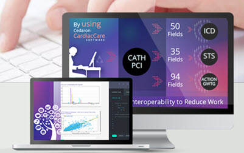

CardiacCare:
Cedaron's Industry-leading Registry Solution
- NCDR and STS Certified Vendor since 1998.
- Eliminates redundant data entry
- Effortlessly transfer your data from EHR, hemodynamic system, CVIS, or
others using interface capability.
- Strong partnerships with Merge, McKesson, Cerner, Fuji, AGFA, Philips,
Ascend Hit, Digisonics, and ScImage.
LEARN MORE ABOUT CARDIACCARE

EHR & Connect Software Solutions:
Therapy and Health Record Problem-Solvers
Providing Therapist Electronic Health Record software solutions for the whole industry.
- APTA, AOTA, ASHA, and Speech-Language Pathology
SEE MORE OF EHR & CONNECT